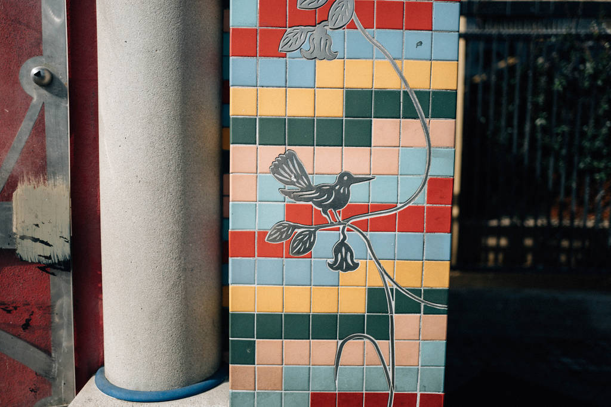

贡献¶
Python-guide目前还在开发中，欢迎大家贡献代码。
如果您有feature request，修改建议，或者bug报告，请在 GitHub 上新建issue。如果想要提交补丁，请直接pull request到 GitHub。 一旦您的修改被merge，您会被自动添加到 贡献者一览 中。
要做的事¶
如果您想为我们做些贡献，这里有我们的计划。一个简短的 todo 列表。
- Establish “use this” vs “alternatives are….” recommendations
Todo
Write about Blueprint
(The original entry is located in /opt/Python-Guide-CN-master/docs/scenarios/admin.rst, line 341.)
Todo
完善 “冻结您的代码” 部分（stub）。
(The original entry is located in /opt/Python-Guide-CN-master/docs/shipping/freezing.rst, line 32.)
Todo
补充更多简单的生成 .exe的步骤。
(The original entry is located in /opt/Python-Guide-CN-master/docs/shipping/freezing.rst, line 72.)
Todo
Replace this kitten with the photo we want.
(The original entry is located in /opt/Python-Guide-CN-master/docs/shipping/publishing.rst, line 8.)
Todo
包括每个列出项目中典型代码的例子。解释为什么它是非常优秀的代码，举出较复杂的例子。
(The original entry is located in /opt/Python-Guide-CN-master/docs/writing/reading.rst, line 39.)
Todo
解释快速识别数据结构，算法，并确定代码内容的技术。
(The original entry is located in /opt/Python-Guide-CN-master/docs/writing/reading.rst, line 41.)